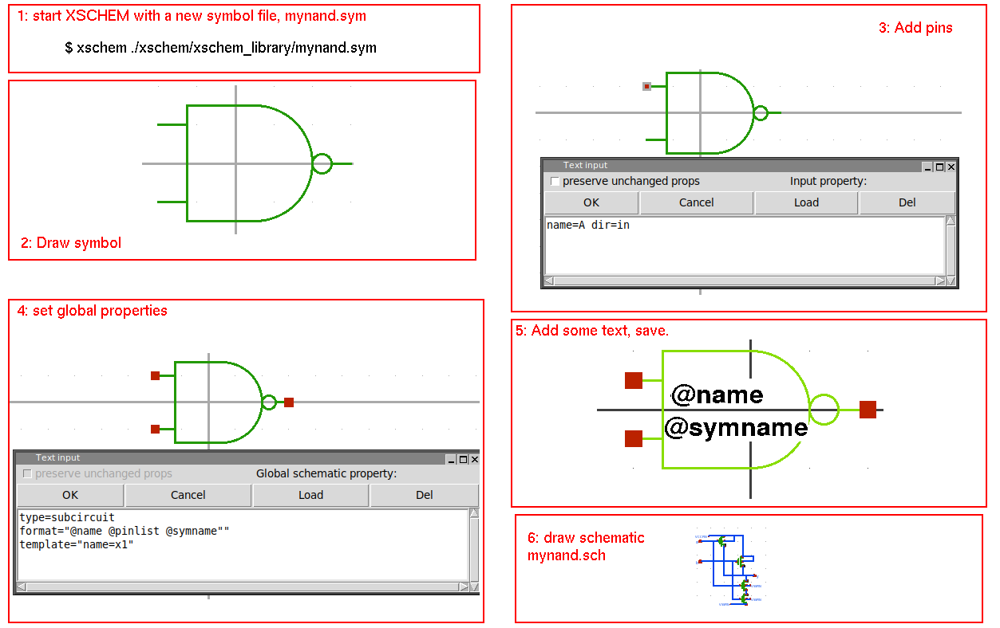

SYMBOL CREATION
- Start XSCHEM with a new symbol name (mynand.sym).
- Draw symbol shape.
- Add pins.
- Set global properties.
- Add some text
Symbol name, instance name.
- If symbol is a subcircuit
draw schematic (mynand.sch).

Symbol name, instance name.
draw schematic (mynand.sch).